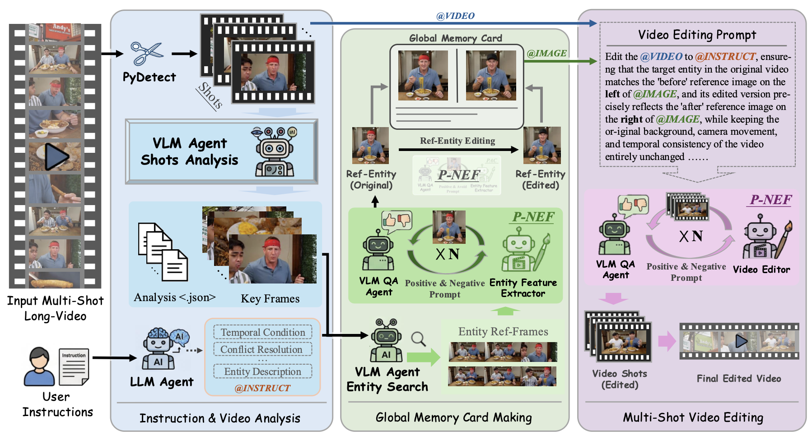
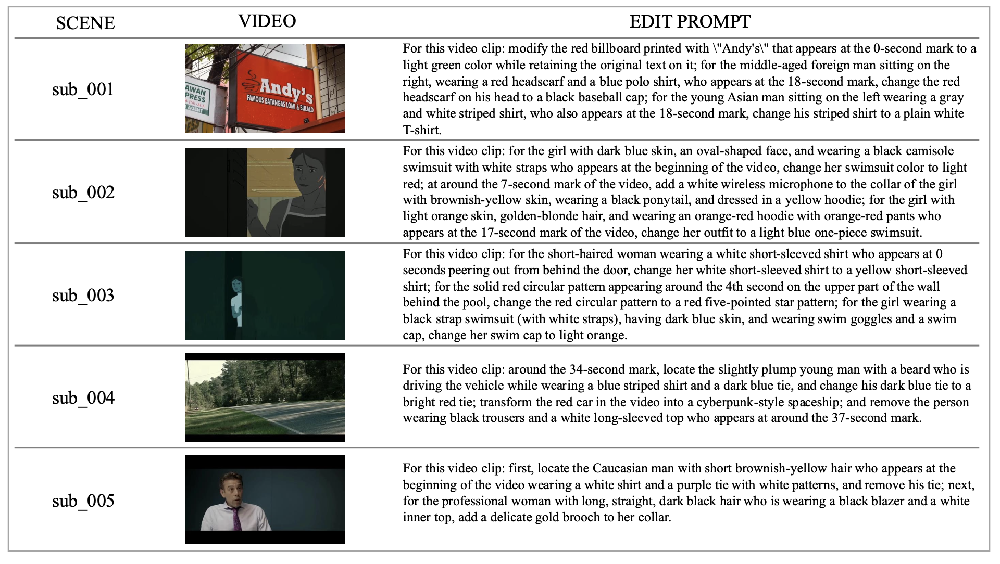
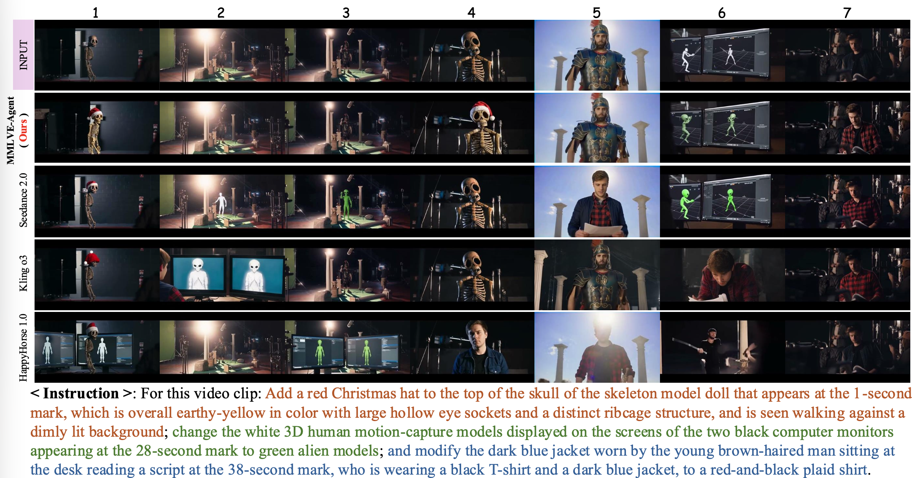
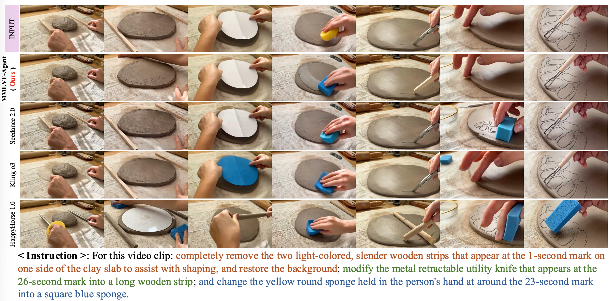

An agentic framework that edits real-world multi-shot long videos from a single natural-language instruction — preserving identity, background, and camera motion.
MMLVE is defined around three objectives that naive chunking pipelines fundamentally fail to satisfy.
Keep the edited entity's visual identity consistent across every shot — no cross-shot “amnesia” or identity drift.
Execute diverse, high-density instructions independently, without mutual interference or attribute leakage.
Leave un-targeted regions, backgrounds, and camera motion completely untouched.
A heterogeneous multi-agent pipeline: shot boundary detection + LLM instruction parsing → per-shot VLM analysis → Global Memory Card making → reference-guided video editing & propagation → assembly.

The top-k (k=6) highest-confidence keyframes of the target entity are aggregated into a reference grid and synthesized into a canonical reference image — a global visual anchor that guarantees CSEC & MID across arbitrary physical shots.
A VLM evaluator emits both a Negative Prompt (to correct errors) and a Positive Prompt (to balance the model's attention), enabling autonomous self-correction and monotonic improvement in generation quality.
Editing results of MMLVE-Agent on complex multi-shot long videos.

Comparison against baselines. Only MMLVE-Agent simultaneously achieves CSEC, MID, and ZDSS; baselines suffer from cross-shot amnesia, identity morphing, and destruction of un-targeted content.


Each row shows the original input and the edited output of four methods on the same multi-shot long video. MMLVE-Agent (Ours) preserves consistency where baselines fail.
Hover a video and use the controls to play. Videos loop automatically once started.
@article{wu2026thinking,
title = {Thinking on Shots: Consistent Multi-Shot Video Editing with Agentic Reasoning},
author = {Wu, Chenyang and Long, Fuchen and Huang, Binyuan and Sun, Xinlong
and Chen, Xi and Guo, Chun-Le and Li, Chongyi},
journal = {arXiv preprint arXiv:2608.26809},
year = {2026}
}